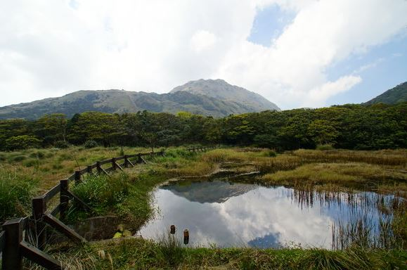
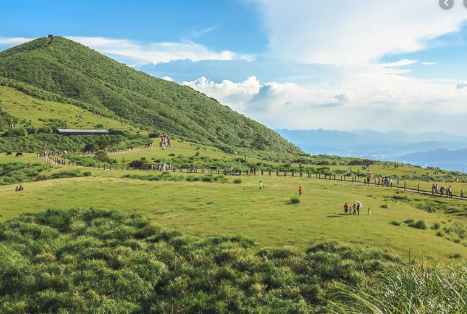
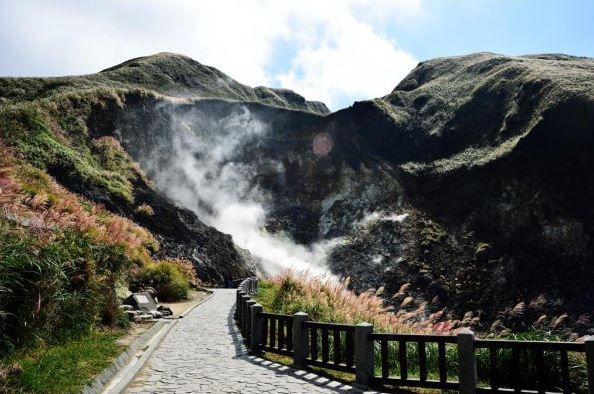
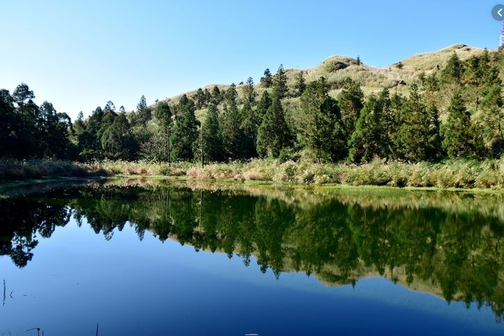
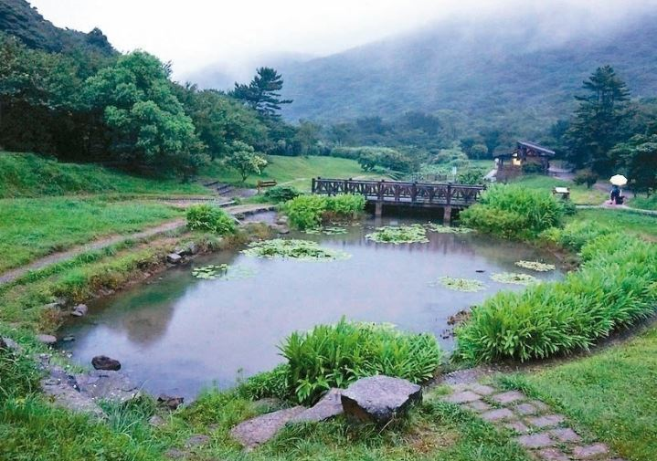
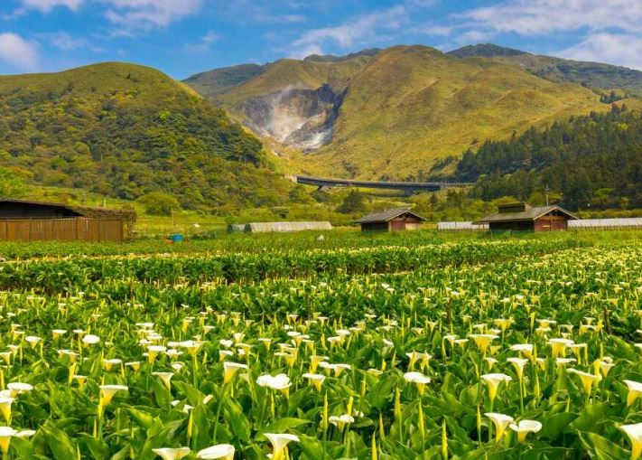
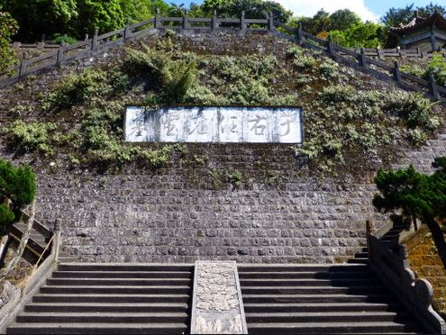

注意事項
- 車子不大(但可坐得舒適)，行李要精簡
- 帶泡湯用毛巾
- 帶雨具
車型
Toyota Sienta
行程
| Time | Activity |
|---|---|
| 06:30 | 志偉、彥婷從新竹出發 |
| 07:30 | 到達台北接爸媽、哥哥、京暘 |
| 08:30 | 到達陽明山 |
| 08:30~12:00 | 涓絲瀑布、擎天崗 |
| 12:00~13:30 | 午餐 |
| 13:30~17:00 | 冷水坑、小油坑、夢幻湖 |
| 17:00~18:30 | 晚餐 |
| 18:30~21:00 | Check in + 休息 |
| 21:00~22:40 | 泡湯 |
| Time | Activity |
|---|---|
| 07:00 | 起床 |
| 07:30~08:30 | 早餐 |
| 9:00 | Check out |
| 9:00~11:30 | 蝴蝶步道、竹子湖、于右任墓 |
| 11:30~12:30 | 午餐 |
特色景點

【 涓絲瀑布 】
因水量不大，形成有如絹絲般的細長瀑布，因而得名。
氣候環境潮濕多霧，孕育出多樣豐富的動植物生態。
【 涓絲瀑布 】
因水量不大，形成有如絹絲般的細長瀑布，因而得名。
氣候環境潮濕多霧，孕育出多樣豐富的動植物生態。

【 擎天崗 】
因為牛隻的啃食，此處便形成了遼闊的草原景觀。牛隻為早年放牧未領回自然繁衍的20多頭野化水牛。
【 擎天崗 】
因為牛隻的啃食，此處便形成了遼闊的草原景觀。牛隻為早年放牧未領回自然繁衍的20多頭野化水牛。
【 冷水坑 】
「冷水坑」名字由來：
- 因本區溫泉因溫度只有40℃，遠低於其他地區泉溫度而得名。
- 此處位於七股山南面山麓有一石穴湧泉，水質純淨不含硫和鐵成份，清澈見底、水溫冷涼

【 小油坑 】
「後火山作用」所形成之噴氣孔、硫磺結晶、溫泉及壯觀的崩塌地形深具特色。
【 小油坑 】
「後火山作用」所形成之噴氣孔、硫磺結晶、溫泉及壯觀的崩塌地形深具特色。

【 夢幻湖 】
讓它聲名大噪的是來自於它的稀有水生蕨類：台灣水韭。台灣水韭為台灣的特有種，並且只生存在夢幻湖當中，是極為稀有、瀕臨絕種的保育類植物。
【 夢幻湖 】
讓它聲名大噪的是來自於它的稀有水生蕨類：台灣水韭。台灣水韭為台灣的特有種，並且只生存在夢幻湖當中，是極為稀有、瀕臨絕種的保育類植物。

【 蝴蝶步道 】
全長約1.8公里，走完全程約需80分鐘(往返)。地勢寬廣開闊、物種繁多，有多種蜜源、食草植物；親水生態池有多種水生植物，是蛙類的最佳棲息地，蛙鳴蝶舞成為本區最美妙的影音。
【 蝴蝶步道 】
全長約1.8公里，走完全程約需80分鐘(往返)。地勢寬廣開闊、物種繁多，有多種蜜源、食草植物；親水生態池有多種水生植物，是蛙類的最佳棲息地，蛙鳴蝶舞成為本區最美妙的影音。

【 竹子湖 】
「竹子湖」地名的由來：
【 竹子湖 】
「竹子湖」地名的由來：
- 兩百年前漢人初到此地開墾時，因見土地泥濘且遍地竹林，於是稱此為竹子湖（閩南語中的「湖」有泥濘地的意思）。
- 因山間盆地一帶早期簇生著箭竹林，山頂吹下的山風搖動箭竹林的景象，彷彿是湖水盪漾，因此稱之為竹子湖。

【 于右任墓 】
于右任，中華民國開國元勳，清末以來的革命家，新聞工作者，也是詩人、書法家。
墓園內松柏古樸蒼勁，寧靜莊嚴，墳高8呎，橢圓形，西北向，前立「監察院院長于公右任之墓」碑，為蔣中正故總統所題。
【 于右任墓 】
于右任，中華民國開國元勳，清末以來的革命家，新聞工作者，也是詩人、書法家。
墓園內松柏古樸蒼勁，寧靜莊嚴，墳高8呎，橢圓形，西北向，前立「監察院院長于公右任之墓」碑，為蔣中正故總統所題。